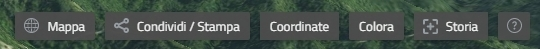
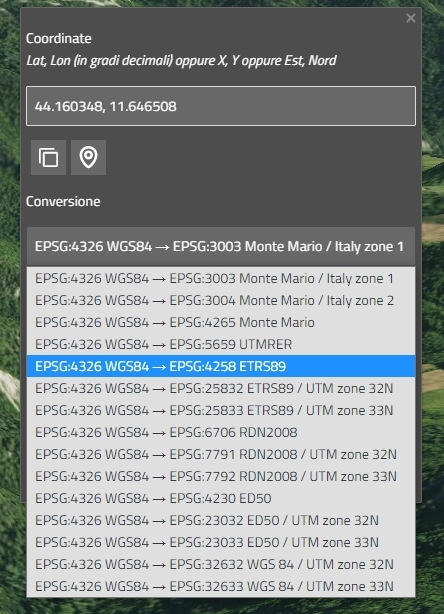
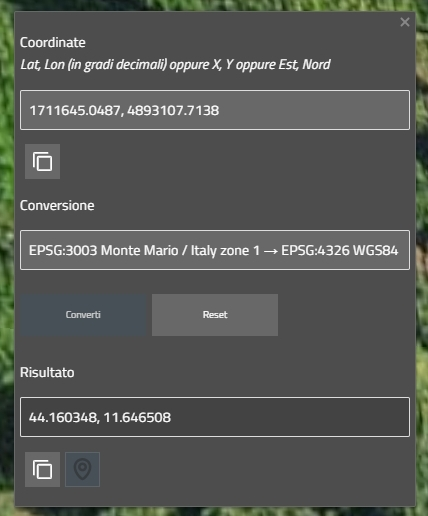
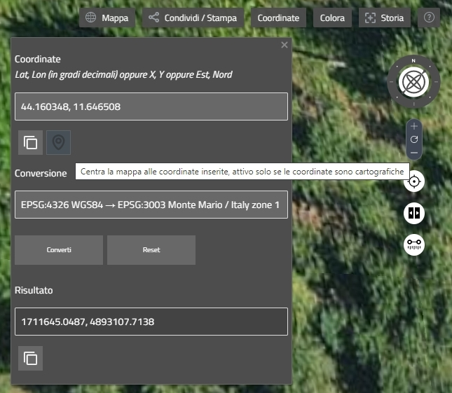
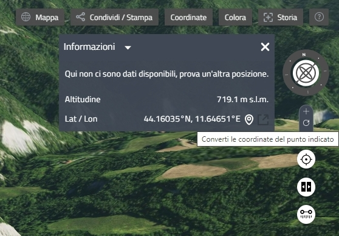

rer3d-map è collegato al webservice di Regione Emilia-Romagna per la trasformazione delle coordinate ed è possibile convertire coordinate tramite il pannello delle coordinate.
Il pannello può essere aperto o chiuso cliccando sul bottone Coordinate, nel menù.
Nel pannello delle coordinate è possibile inserire le coordinate che si desidera convertire, possono geografiche in gradi decimali (Latitudine, Longitudine) oppure proiettate in metri (X, Y oppure Est, Nord).
Dopo aver inserito le coordinate di input va scelta la conversione che si desidera effettuare scegliendo fra quelle disponibili nell'elenco di conversione. Nel caso in cui le coordinate di input siano geografiche, l'elenco delle conversioni conterrà soltanto quelle il cui sistema di riferimento di partenza sia geografico.
Cliccando sul bottone Converti verrà effettuata la conversione tramite il webservice ed il risultato sarà visibile nel box sottostante.
Il bottone Reset riporta il pannello allo stato iniziale, cancellandone tutti i campi.
Il bottone "copia" consente di copiare negli appunti le coordinate di input o quelle risultato della conversione.
Il bottone "vai a" centra la mappa alle coordinate di input o a quelle risultato della conversione. Il bottone si attiva solo se le coordinate di input, o risultato della conversione, sono cartografiche.
Ci sono altri due modi di inserire le coordinate di input nel pannello. Il primo consiste nel cliccare su un punto della mappa quando il pannello delle coordinate è aperto, automaticamente le coordinate del punto saranno inserite nel campo delle coordinate di input. Il secondo si ha cliccando su un punto della mappa quando il pannello delle coordinate è chiuso, si aprirà la finestra delle Informazioni e cliccando sul bottone si causerà l'apertura del panelllo delle coordinate con già popolato il campo delle coordinate di input.
